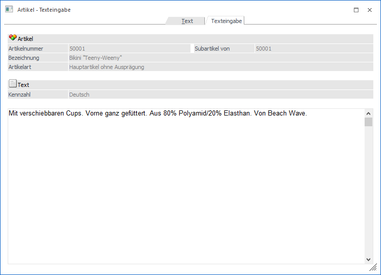
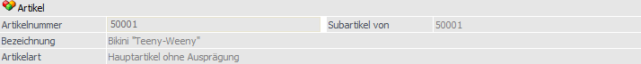
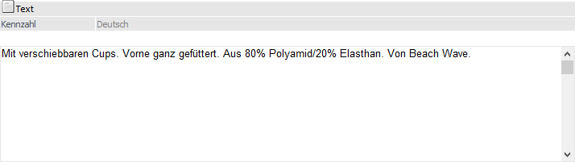
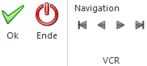

In dem Register "Texteingabe" kann über ein RTF-Textfeld der Text der Artikelnotiz hinterlegt werden. Das Register wird dabei über die Auswahl (Doppelklick oder Enter-Taste) einer Artikelnotiz im Register "Text" automatisch geöffnet.

Folgende Eingabefelder und Informationen stehen zur Verfügung:
Artikel

Ø Artikelnummer
An dieser Stelle wird die Artikelnummer des ausgewählten Artikels angezeigt.
Ø Subartikel von
Handelt es sich bei dem aktuellen Artikel texttechnisch um einen Subartikel eines anderen Artikels, so wird hier die Artikelnummer des sogenannten Hauptartikels angezeigt und alle folgenden Felder sind für eine Eingabe gesperrt. Handelt es sich nicht um einen Subartikel, so wird an dieser Stelle die Artikelnummer des aktuellen Artikels dargestellt.
Ø Bezeichnung
Hier wird die Bezeichnung des aktuell gewählten Artikels dargestellt.
Ø Artikelart
An dieser Stelle wird die Art des Artikels ausgewiesen, d.h. ob es sich z.B. um einen Artikel mit oder ohne Ausprägungen handelt.
Ø Lagerführung
Handelt es sich bei dem Artikel um einen Artikel, welcher in 2 Mengen geführt wird, so wird neben der Artikelart die statische Information "Lagerführung in 2 Mengen" angezeigt.
Text

Ø Kennzahl
An dieser Stelle wird die Bezeichnung / Beschreibung der Artikelnotiz angezeigt.
Ø RTF-Text
In das RTF-Text-Feld kann der Text der Artikelnotiz hinterlegt werden. Sobald der Fokus in das Feld gelegt wird, können über den Ribbon "TEXTFORMATIERUNG UND TOOLS" Textformatierungen vorgenommen werden (nähere Informationen entnehmen Sie bitte dem Kapitel "Textformatierung und Tools Ribbon" im WinLine Allgemein Handbuch).
Buttons

Ø Ok
Durch Anwahl des Buttons "Ok" bzw. der Taste F5 werden die getätigten Eingaben zwischengespeichert und zurück in das Register "Text" gewechselt. Die endgültige Speicherung erfolgt bei Speicherung des Artikels.
Hinweis
Bei Anklicken des Registers "Text" wird ebenfalls zwischengespeichert und zurückgewechselt.
Ø Ende
Durch Anwahl des Buttons "Ende" bzw. der Taste ESC werden die getätigten Eingaben verworfen und zurück in das Register "Text" gewechselt.
Ø VCR-Buttons
Über die so genannten VCR-Buttons kann durch Mausklick zwischen den 10 Texten des Artikels geblättert werden.
ü  Damit kann der
erste Text angesprochen werden.
Damit kann der
erste Text angesprochen werden.
ü  Damit kann der
vorherige Text angesprochen werden.
Damit kann der
vorherige Text angesprochen werden.
ü  Damit kann der
nächste Text angesprochen werden.
Damit kann der
nächste Text angesprochen werden.
ü Damit kann der letzte Text angesprochen werden.
Hinweis
Bei Nutzung der VCR-Buttons werden die getätigten Eingaben zwischengespeichert. Die endgültige Speicherung erfolgt bei Speicherung des Artikels.